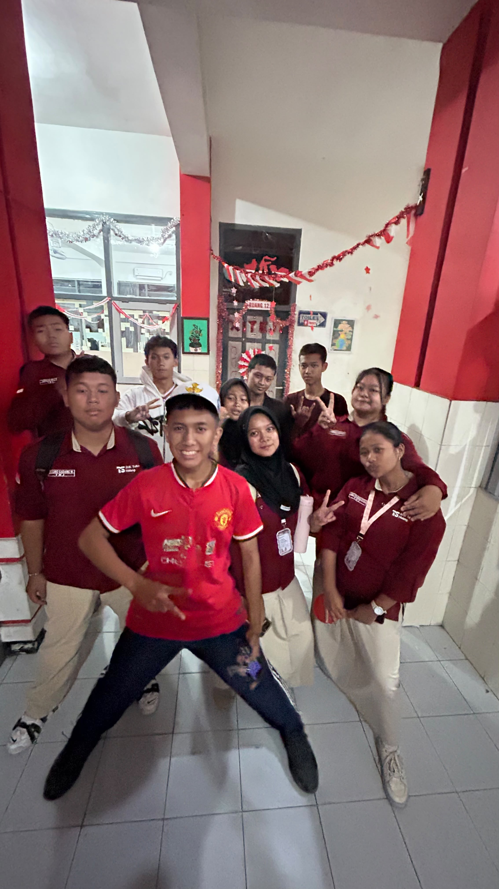
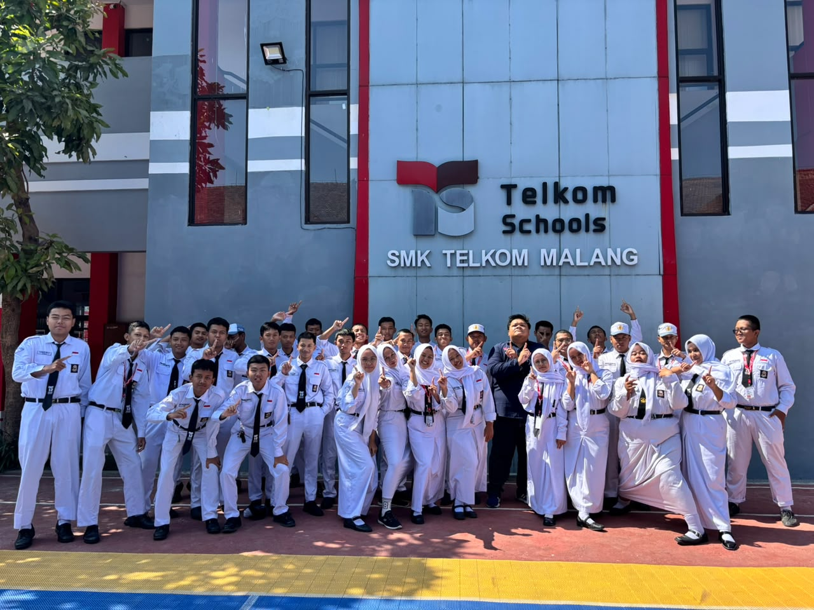

Struktur Organisasi Kelas

Wali Kelas
Yaniko Dimas Yogo Prasetyo

Ketua Kelas
Jhon Terry Eka Ramandhani

Wakil Ketua
Calya Aqila Al Mouzavie

Sekretaris 1
Amelia Fransiska Dyah C

Sekretaris 2
Naura Yuwan Ramandhita

Bendahara 1
Ajeng Ayu Siswati

Bendahara 2
Farlitha As.Sabrin
Jadwal Piket Kebersihan
Senin
Muhammad Ridhlo Maulana Akbar
M.Devan Abdika Bangsa
Fabrianz Torino Putranzah
Ahmad Zidan Alfadly
Acha Bryan Firdaus
Ahmad Khubaisy Muhsinin
Juan Dzakwan Hisyam
Selasa
Silva Talitha Dzakira
Fizza Fahrian Dwidama
Muhammad Farid Byantara Kusuma
Khalil Azzam Mudji Maulinda
Nico Putra Pramana
Muhammad Akbar Brilian
Ahmad Sony Fahreza
Rabu
Naura Yuwan Ramandhita
Nadine Anindya Alfian Putri
Amelia Fransiska Dyah C
Reyghen Ethan Bradly Simanjuntak
Theodorius Adi Fatlolon
Calya Aqila Mouzavie
Muhammad Yafiq Nadim Rafif
Kamis
Ayyub
Ajeng Ayu Siswati
Dhaniel Wahyu Bahtiar
Ken Kanzan Makhfiyan
Baskoro Gadang Widhyodono
Raditya Satrio Abimanyu
Farlitha As.Sabrin
Jumat
Zidni Nuro M
Dwi Affandy
Lintang Albrian Anwar
Zanuar Eka Prasetya
Queensha Aurellia
Jhon Terry Eka Ramadhani
Dokumentasi Kegiatan



